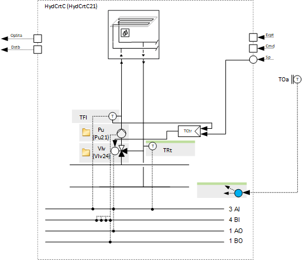
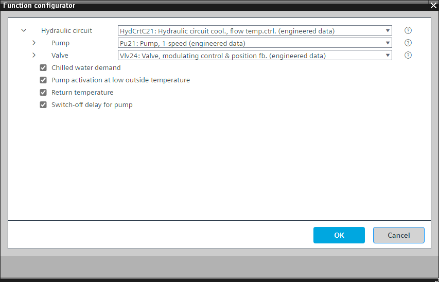

[HydCrtC21] 用于冷却、流动温度控制的液压回路
Program block, name / node subtype: [HydCrtC21] Hydraulic circuit for cooling, flow temperature control
Library hierarchy: Cooling and refrigeration equipment
Family: HydCrtC
项目树 | 图表 |
|---|---|
|
|  |

Configurator


程序块存储在没有 I/Os. 的库中 使用auto-create and auto-connect函数创建 I/Os 和 /or 将它们连接到接口块，例如 R_A、CMD_B。或者，从包含库中预定义 I/Os 的文件夹中取出 I/Os，并从工厂中取出 /or，并将它们连接到接口块。
控制流动温度。
该程序接收用于冷却的水流温度设定值，并将其与计算值对象一起显示在 BACnet 上。它包含一个 PID 控制器，可改变阀门位置以控制流动温度。当该功能开启时泵运行。
程序中的参数定义当流量温度传感器出现故障时设备是否停止。
该程序块具有以下可选功能：
Option: Chilled water demand
生成冷冻水需求并将其与计算值对象一起显示在 BACnet 上。
Option: Pump activation at low outside temperature
泵始终在室外温度低于特定限制的情况下运行。这是为了增加防冻保护。
Option: Return temperature (1xAI)
创建回水温度的模拟输入并读取其信号。它可以产生警报（上限和下限）。
Option: Switch-off delay for pump
定义泵的关闭延迟。它被预设为很短并且可以在程序中参数化。
姓名 | 描述 | 类型 | 报警/通知类 | 趋势/类型 |
|---|---|---|---|---|
Pu | Pump | N/A | N/A | |
Vlv | Valve | N/A | N/A | |
属于该元素的其他元素： TCtr | Temperature controller | Ctr: Controller | ||||
TFl | Flow temperature | AI：模拟输入 | 是的，4 | 是的，2 |
PrSpTFl | Present flow temperature setpoint | ACalcVal: Analog calculated value | No | No |
姓名 | 描述 | 类型 | 报警/通知类 | 趋势/类型 | |
|---|---|---|---|---|---|
ChwDmd | Chilled water demand | BCalcVal: Binary calculated value | No | No | |
TRt | Return temperature | AI：模拟输入 | 是的，4 | 是的，2 | |
描述 |
|---|
Pump activation at low outside temperature |
Switch-off delay for pump |